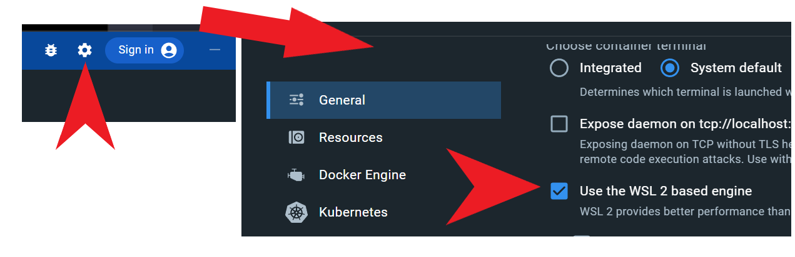

Computer Architecture 2025fall Project 1
By Prof. Jie Zhang
Due: 11:59:59 pm, October 8, 2025
Nowadays, gem5 has been the most popular simulation framework used by computer architecture research community. This project will cover the tutorial of building up a computer system framework by using gem5 simulator. We will study how different CPU types and main memory systems can impact the whole performance of computer system. Please note that gem5 simulation usually takes a long time. So you need to start the project as early as possible.
For your convenience, we have tried to minimize the hassles of setting up gem5, but still, it is somewhat tricky. Whenever you face the trouble or problem on this project, please refer to gem5 documentation or contact TAs by WeChat or e-mail. All the following information have been verified on Ubuntu 20.04.1 with Linux Kernel 5.15.0 and Ubuntu 22.04.2 LTS with the Linux Kernel 5.19.0.
Setup: Install Toolchain and Compile gem5
Install environment
As a complicated software, gem5 requires several prerequisites to run properly. However, manually preparing the correct environment is very challenging. For your convenience, we provide a Docker image with correctly installed prerequisites. To use the image, you first need to install Docker. On Windows system, you can easily install it by installing Docker Desktop; on Linux system, you can install Docker following the documentation. You can use the following command to check your installation:
docker --version
# You'll see contents like the following:
Docker version 24.0.2, build cb74dfc
Once you've installed Docker, you can pull our image with the following command:
docker pull chaselab/archlab
If you can't connect to Docker Hub, you can also download the image archive from our PKU Disk and load it with the following command:
docker load -i archlab-image.tar
All the resources used in labs will be visible in the PKU Disk.
After pull (load) the image, you can find it by running the following command:
docker images
# you'll see contents like the following:
REPOSITORY TAG IMAGE ID CREATED SIZE
chaselab/archlab latest c028b12a3ac4 1 second ago 1.8GB
If you prefer to install the prerequisites for gem5 manually, you can follow the commands listed below.
sudo apt-get update; sudo apt-get upgrade
# For Ubuntu 20.04
sudo apt install build-essential git m4 scons zlib1g zlib1g-dev libprotobuf-dev protobuf-compiler libprotoc-dev libgoogle-perftools-dev python3-dev python-is-python3 libboost-all-dev pkg-config
# For Ubuntu 18.04
sudo apt install build-essential git m4 scons zlib1g zlib1g-dev libprotobuf-dev protobuf-compiler libprotoc-dev libgoogle-perftools-dev python3-dev python libboost-all-dev pkg-config
After preparing the environment, you should clone the codes of gem5. We have provided a skeleton code which you can clone from its repo, or download the code package from PKU Disk and then extract the codes to a directory.
Once you have the codes, you are able to compile gem5. If you are using Docker (if not you can skip this part), you need to firstly create a container to setup the environment. Also, you need to mount the code onto the container when you start it, so that you can read and modify the code files inside the container. The command is as follows:
docker run -it --name <container name> -v <local path>:<container path> chaselab/archlab /bin/bash
- The
-itoption means to attach stdin, stdout and stderr to current terminal, so you can operate the container interactively. - The
--name <container name>option specifies the name of the new container. It may be useful when you try to run other commands on the container, but it is rather optional, because you can always specify a container by its individual ID. You can see the IDs and names of all existing containers with this command:
docker ps -a
# you'll see contents like the following:
CONTAINER ID IMAGE COMMAND CREATED STATUS PORTS NAMES
43518d84eb29 chaselab/archlab "/bin/bash" 14 seconds ago Exited (0) 14 seconds ago lab1
- The
-v <local path>:<container path>allows you to mount a local directory to a directory in the container. Here, you need to specify thelocal pathas the path to yourgem5code, for example,C:\Users\myname\gem5. Thecontainer pathcan be simple, for example,/gem5. When you enter the container, you can see all the codes under container path. Please note that this option only accepts absolute paths, otherwise the contents in the directory will not be correctly mounted. - The first argument after the options is the image name, here is
chaselab/archlab. - The second argument is the command you want to run upon container start. Here we use
/bin/bashto start an interactive terminal.
Thus, filling up all the options and arguments makes the command look like this:
docker run -it --name lab1 -v C:\Users\myname\gem5:/gem5 chaselab/archlab /bin/bash
After starting the container, you can run any commands in it. However, you need to know more docker commands when meeting other situations:
- If you've closed the container by running
exitand want to run the lab again, you do not need to create another container withdocker run. Instead, you can use the following command to restart your container and attach stdin, stdout and stderr to your terminal:
docker start -ia <container ID/name>
- If you start the simulation and want to close the terminal while keeping
gem5running, you can typectrl+p+qto stop the interactive evironment and return to your own terminal. Then, when you want to return to the container, you can use the following commands:
docker attach <container ID/name> # return to the original container terminal
docker exec -it <container ID/name> <command> # start a new container terminal
Compile gem5
Once the container has started, or if you have manually prepared the environment, you can proceed to compile gem5. Please note that gem5 must be built on a Unix platform (e.g., Linux and MacOS). gem5 uses SCons to manage its compilation. In this lab, we'll compile for ARM ISA:
cd gem5
scons build/ARM/gem5.opt -j $(nproc) # use all your cores to compile
Building gem5 may take you more than 30 minutes on your PC. If it completes successfully, you will see the following results:
[ CXX] ARM/base/date.cc -> .o
[ LINK] -> ARM/gem5.opt
scons: done building targets.
You now have a binary in the directory build/ARM called gem5.opt.
Part 1: Create and Run a Simple Configuration Script
gem5 simulator is built from a collection of Python objects, SimObject. In this part, you need to set up a simple configuration script to describe the SimObject to be instantiated, their parameters, and their relationships. Following the instructions in this part, you are able to model a simple computer system, including a simple CPU core, a single DDR4 memory channel, and a system-wide memory bus connecting CPU core and memory channel.
Let’s get started by creating a new configuration file:
mkdir configs/proj1
touch configs/proj1/simple.py
This configuration file is a normal Python file. Therefore, you can use any legal grammar or available libraries in Python.
The first thing we should write in the script is to import the class definitions from the m5 modules and all SimObject as follows:
import m5
from m5.objects import *
gem5 is an open-source project based on another project m5, which is still involved in gem5 from many aspects.
In gem5, to simplify the description of large systems, the overall simulation specification is organized as a tree. Each node in the tree is a SimObject instance. The program must create a special object root of class Root to identify the root of the tree hierarchy. When parsing the configuration program, the tree hierarchy is walked recursively to identify the objects from the root to its descendants. We will create the first object which is the Root and specify its parameters in the “m5 main process”:
if __name__ == '__m5_main__':
root = Root()
root.full_system = False
root.system = System()
gem5 provides two simulation modes: system call emulation (SE) mode and full system (FS) mode. In FS mode, Gem5 can simulate a complete system with devices and an operating system, while in SE mode, only essential system services are provided by simulator to execute workloads. In our projects, we will use SE mode for faster simulation (root.full_system = False). The above codes also instantiate class System. It is the parent of all the other objects in the simulated system, and contains a lot of functional information, such as the physical memory ranges, the root clock domain, the root voltage domain, etc.
Here is an alternative method to pass the parameters as named arguments:
root = Root(full_system = False, system = System())
All the definitions of the used Python objects can be found under gem5/src/.../*.py. For example, Root can be found in gem5/src/sim/Root.py. You can check the usages of objects and choose your favorite way.
Now that a reference to the system for the simulation has been created, let’s build a simple but complete system. The first thing is to set the clock on the system. We first need to create the clock domain, which is an instance of class SrcCLockDomain. Clock domain contains multiple parameters such as clock (clock frequency), voltage domain (voltage), etc. Each parameter has its default value defined in the python class. We can also manually set the values in the configuration script as follows:
def init_system(system):
system.clk_domain = SrcClockDomain(clock='4GHz', voltage_domain=VoltageDomain())
Once the clock domain is set up, we can move to create the memory and the memory controller. We need to configure the memory simulation mode and memory range. Since we make configurations for normal simulation, we are going to select timing mode for the memory simulation, which can be applied in most conditions. In other simulation conditions such as restoring memory system from a checkpoint, you may select atomic mode.
Then, we will also set up a single memory range of size 2GB and assign it to the system. We should also get instances of memory controller (MemCtrl) and memory device from various memory device classes such as DDR4 DRAM (DDR4_2400_8x8), HMC (HMC_2500_x32), etc. All available memory devices classes are listed in src/mem/DRAMInterface.py. Last, we assign the memory device with the memory range.
system.mem_mode = 'timing'
system.mem_ranges = [AddrRange ('2GB')]
system.mem_ctrl = MemCtrl()
system.mem_ctrl.dram = DDR4_2400_8x8()
system.mem_ctrl.dram.range = root.system.mem_ranges[0]
So far, we have almost completed memory setup. Now, we can create a CPU. gem5 provides various types of CPU such as SimpleCPU (simplified CPU timing model), MinorCPU (in-order CPU), O3CPU (out-of-order CPU), etc. As an example, we choose simple timing-based CPU in Gem5, TimingSimpleCPU. This CPU model executes each instruction in a single clock cycle, except for memory requests, which flow through the memory. You can instantiate the object in the system:
system.cpu = TimingSimpleCPU()
Next, we need to create a system bus to connect between the CPU and memory controller. The command to instantiate memory bus is as follows:
system.membus = SystemXBar()
Now that we have created the system bus, the next step is to describe the interconnect logic which actually connect the CPU to the memory. For CPU, we need to connect the ICache and DCache ports to the system bus (currently we do not include any cache in the CPU). For memory, we need to connect memory controller port to the system bus. In addition, we need to create an interrupt controller on the CPU and connect a system port to the memory bus. This port is a functional-only port to allow the system to read/write memory:
system.cpu.icache_port = system.membus.cpu_side_ports
system.cpu.dcache_port = system.membus.cpu_side_ports
system.mem_ctrl.port = system.membus.mem_side_ports
system.cpu.createInterruptController()
system.system_port = system.membus.cpu_side_ports
# system.cpu.interrupts[0].pio = system.membus.mem_side_ports
# system.cpu.interrupts[0].int_requestor = system.membus.cpu_side_ports
# system.cpu.interrupts[0].int_responder = system.membus.mem_side_ports
For your information, X86 ISA also requires connecting PIO and interrupt ports to the memory bus. Here we use ARM ISA and ignore these requirements, but we leave the code in comments.
In code above, we manually connect all the necessary ports of CPU to show the details of system wiring up. In fact, gem5 source codes have provided a wrapped helper function to perform this procedure. You can use it as follows:
system.cpu.connectBus(system.membus)
system.mem_ctrl.port = system.membus.mem_side_ports
system.cpu.createInterruptController()
system.system_port = system.membus.cpu_side_ports
So far, we have finished the configuration of simulated system. Next, we will set up the program to be executed. gem5 allows you to specify any application built for ARM ISA and that’s been statically compiled. In this script, we will execute a simple “Hello World” program. You can compile the code with make in tests/labexe, or download the pre-built binaries from PKU Disk.
In our released codes, we've included five simple but representative algorithm programs in gem5/tests/labexe. The Docker image also includes the cross-compile toolchain. To compile these programs, simply run following commands:
cd tests/labexe
make
Then the executable files can be found under tests/labexe.
If you want to compile your own programs, just use arm-linux-gnueabihf-gcc and arm-linux-gnueabihf-g++ as the compiler. Remember to add -static option so that gem5 can correctly load the executables.
If you are not using Docker and want to compile ARM executables, you should install the cross-compile toolchain:
sudo apt install gcc-arm-linux-gnueabihf
If you prefer not to build the excutables by yourself or the building process takes a lot of time, you can just download the pre-built binaries from PKU Disk.
To inform gem5 to execute our program, we first need to set system workload to the executable. Then we create a process and set the process command to the workload we want to run. This is a list structure with the executable in the first field and the arguments passed to the executable in the rest of the list. Then we configure the CPU to execute the process and finally create the functional execution contexts in the CPU:
import os
def init_process(root):
exe_path = 'tests/labexe/hello'
root.system.workload = SEWorkload.init_compatible(exe_path)
process = Process()
process.executable = exe_path
process.cwd = os.getcwd()
process.cmd = [exe_path]
root.system.cpu.workload = process
root.system.cpu.createThreads()
Finally, we need to instantiate the object hierarchy by calling instantiate() function. Once the object hierarchy has been instantiated, the actual simulation can begin. The simulate() function invokes the C++ event loop. By default, this function will simulate forever, or until some other factor causes the simulation loop to exit (such as the CPU has been shutdown). If a positive integer argument is passed to the simulate function, it will simulate at most that number of additional ticks, but may exit sooner if another cause arises first. In any case, the simulate() function will return an event object that represents the reason for exiting. The object can be queried via its getCause() method for a string explaining that reason. Let’s return to m5 main process, initialize the system and process, then start the simulation:
if __name__ == '__m5_main__':
root = Root()
root.full_system = False
root.system = System()
# new codes:
init_system(root.system)
init_process(root)
m5.instantiate()
exit_event = m5.simulate()
print(f'{exit_event.getCause()} ({exit_event.getCode()}) @ {m5.curTick()}')
Now, we have created a simple but complete simulation script, we are ready to run gem5:
build/ARM/gem5.opt configs/proj1/simple.py
If everything goes fine, you'll see contents like follows:
...
Hello, World!
exiting with last active thread context (0) @ 14307750
Please include a screenshot of the output on stdout of your configuration script in your report.
Part 2: Understand gem5 Statistics and Output
After gem5 simulation completes, by default there are three files generated in directory m5out:
config.ini: contains a list ofSimObjectand the values of their parameters for simulation.config.json: same withconfig.ini, but in json format.stats.txt: detailed statistics generated fromgem5simulation. Specifically, it contains general information about the execution, which is shown as follows:
---------- Begin Simulation Statistics ----------
simSeconds 5.148973 # Number of seconds simulated (Second)
simTicks 5148973163000 # Number of ticks simulated (Tick)
...
It contains three columns: left lists the statistics names, middle column lists the values, and the right column shows the explanation. In this project, simSeconds and simInsts are important. You can calculate your simulated computer system performance (instructions per second) by simInsts / simSeconds. You also can find out system.cpu.numCycles and calculate IPC (instruction per cycle) by simInsts / system.cpu.numCycles. Each SimObject in the simulated system will print its own statistics. You can use any finding approach (e.g., grep) to check specific statistics, like the statistics of system.cpu.
You can change the output directory of gem5 using command options like these (the options need to be before the script argument):
build/ARM/gem5.opt -d another-dir configs/proj1/simple.py
build/ARM/gem5.opt --outdir=another-dir configs/proj1/simple.py
This is important for this and other projects, because gem5 will override previous output in the same directory, which may delete your experiment results and waste your time. Make sure to backup important results before running gem5 again!
Part 3: Add Options in the Configuration Script
In this project, you are required to explore different CPU and memory configurations for different workloads. However, it is cumbersome to edit your configuration script every time you want to test the system with different parameters. To smoothly solve this issue, you can add command-line parameters to your configuration scripts. Since the configuration script is a Python script, it can use Python libraries that support argument parsing (e.g., argparse). Adding options to configuration script requires several steps. After importing argparse, you need to specify the arguments in m5 main process:
import argparse
if __name__ == "__m5_main__":
parser = argparse.ArgumentParser()
parser.add_argument(
"commands_to_run",
nargs="*",
help="Command(s) to run",
)
parser.add_argument(
"--cpu",
type=str,
choices=list(cpu_types.keys()),
default="simple",
help="CPU model to use",
)
parser.add_argument(
"--mem",
type=str,
choices=list(mem_types.keys()),
default="DDR4",
help="type of memory to use",
)
parser.add_argument(
"--clock",
type=str,
default="4GHz"
)
args = parser.parse_args()
...
argparse is a very useful Python library that provides a set of methods to help build user-friendly CLI. In codes above we add a positional argument commands_to_run and three options with prefix --. gem5 support you to use -h,--help options to check the usage of a configuration script:
build/ARM/gem5.opt configs/proj1/simple.py --help
# you'll see contents like the following:
...
usage: simple.py [-h] [--cpu CPU] [--mem MEM] [--clock CLOCK] [commands_to_run [commands_to_run ...]]
...
For detailed usage of argparse, please refer to the official documentation.
You may notice that we have specified the choices in --cpu and --mem, which is a Python list that can specify the available choices. We've also defined cpu_types and mem_types and used their keys() as the choices. This is a convenient way to simplify the arugments used in commands. We can transform the argument short strings to detailed SimObject names with them. gem5 provides various alternative CPU and memory models alongside TimingSimpleCPU and DDR4 memory, such as O3CPU (out-of-order), MinorCPU (in-order), DDR5 memory. We can use these models as choices. Example defines are as follows:
cpu_types = {
"simple": TimingSimpleCPU,
"minor": MinorCPU,
"o3": O3CPU,
}
mem_types = {
"DDR3": DDR3_1600_8x8,
"DDR4": DDR4_2400_8x8,
"DDR5": DDR5_8400_4x8,
}
Next, we need to pass the CPU type option and memory type option to the system. We can modify the init_system() function by following codes:
# DELETE: def init_system(system):
def init_system(system, args):
...
# DELETE: system.mem_ctrl.dram = DDR4_2400_8x8()
system.mem_ctrl.dram = mem_types[args.mem]()
# DELETE: system.cpu = TimingSimpleCPU()
system.cpu = cpu_types[args.cpu]()
...
We've also set the clock speed (--clock) option in codes above, and we can also pass it to the system:
# DELETE: system.clk_domain = SrcClockDomain(clock='4GHz', voltage_domain=VoltageDomain())
system.clk_domain = SrcClockDomain(clock=args.clock, voltage_domain=VoltageDomain())
Finally, we can pass the first positional argument command_to_run to the process, which allows us to specify executables other than simply hello:
# DELETE: def init_process(root):
def init_process(root, args):
# DELETE: exe_path = 'tests/labexe/hello'
exe_path = args.commands_to_run[0]
root.system.workload = SEWorkload.init_compatible(exe_path)
process = Process()
process.executable = exe_path
precess.cwd = os.getcwd()
# DELETE: process.cmd = [exe_path]
process.cmd = args.commands_to_run
root.system.cpu.workload = process
root.system.cpu.createThreads()
Now, we have completed the modification to our configuration script, we can run the script like follows:
build/ARM/gem5.opt configs/proj1/simple.py tests/labexe/gemm --cpu minor --mem DDR5 --clock 2GHz
- Except the
hello, other executables are quite complex, and will take hours forgem5to finish simulation. You can early-stop the simulation with all statistics printed by specifying themax_insts_any_threadin CPU, which will shutdown the CPU when that many instructions are already executed (you can also set an option for this parameter):
system.cpu.max_insts_any_thread = 1e+9
- Find the proper
max_insts_any_threadnumber for your PC that allows a fast simulation, but still generate reasonable statistics (warmup phases in executables may show quite different performance statistics compared to real execution phases). A recommended number is5e+8for this project.
Please include the following in your report:
- Use these system settings (
cpu=simple,clock=2GHz,mem=DDR3) to run simulation. Please use the complex executables provided intests/labexe(i.e.,shell_sort,gemm,spfaandbinary_search). Please calculate and show (in tables or figures) the IPC for these executables. - Repeat the experiments, but change the CPU type (with
mem=DDR3andclock=2GHzunchanged) to achieve better performance for different executables. Also calculate and show the IPC for each executable and CPU type. - Repeat the experiments, but change the mem type (with a fixed CPU type and
clock=2GHzunchanged) to achieve better performance for different executables. Also calculate and show the IPC for each executable and CPU type.
Running complex executables with gem5 takes you a lot of time. This part requires you to run multiple settings, so it takes much longer time. Since gem5 is basically a single-thread process, you can run different settings in parallel to accelerate your experiments.
Also, please remind to set a unique output directory (refer to part 2) for each parallel run, otherwise these runs may override with each other!
You can also use a shell script to automate this parallel running. Things may be like the following:
#!/bin/bash
# examples
cpus=("c1" "c2")
mems=("m1" "m2")
exes=("shell_sort" "gemm" "spfa" "binary_search")
for c in ${cpus[@]}; do
for m in ${mems[@]}; do
for e in ${exes[@]}; do
# set output dir, name it however you like
build/ARM/gem5.opt -d $e$c$m \
configs/proj1/simple.py tests/labexe/$e \
# add `&` after the command to let it run in background
--cpu $c --mem $m &
done
done
done
Then use ctrl+p+q to quit container terminal while keeping the background threads runing.
Submission
- Please submit the deliverables for each part in order and clearly defined in a report form (e.g., PDF or Word). Please give a brief description of the results in your report. You DO NOT need to submit your configuration script in this project.
- Please submit your report as an attachment at course.pku.edu.cn. The title of the attachment should be Student-ID_Name_Proj1 (e.g., 123456789_WangXiaoming_Proj1).
- You can also send your report to ca2024fall@163.com. The titles of your email AND attachment should both be Student-ID_Name_Proj1.
- DO NOT PLAGIARIZE. We will select 10 students randomly and ask them to answer our questions related to their results.
- You will be given 3 slip days (shared by all projects), which can be used to extend project deadlines, e.g., 1 project extended by 3 days or 3 projects each extended by 1 day.
- Projects are due at 23:59:59, no exceptions; 20% off per day late, 1 second late = 1 hour late = 1 day late.
Please include the following in your report:
- Startup: a screenshot that shows you
gem5can compile correctly. - Part 1: a screenshot of the output on stdout of your configuration script.
- Part 3:
- Use these system settings (
cpu=simple,clock=2GHz,mem=DDR3) to run simulation. Please use the complex executables provided intests/labexe. Please calculate and show (in tables or figures) the IPC for these executables. - Repeat the experiments, but change the CPU type (with
mem=DDR3andclock=2GHzunchanged) to achieve better performance for different executables. Also calculate and show the IPC for each executable and CPU type. - Repeat the experiments, but change the mem type (with and fixed CPU type and
clock=2GHzunchanged) to achieve better performance for different executables. Also calculate and show the IPC for each executable and CPU type.
- Use these system settings (
You DO NOT need to submit your configuration script in this project.
Appendix: Common Questions
Here are some common questions that we collected on Part 1, especially for installing environment and compiling gem5:
Pull image issue
If you failed to pull the Docker image with docker pull, it is probably because the Docker Hub is blocked currently. Try to use VPN or download the image from our PKU Disk.
Warning about pre-commit
If you run scons to compile and are warned with Cannot find 'pre-commit' (messages like the following), you can ignore the message. This is only required for contributing to gem5 and will not prevent the compilation.
You're missing the pre-commit/commit-msg hooks. These hook help to ensure your
code follows gem5's style rules on git commit and your commit messages follow
our commit message requirements. This script will now install these hooks in
your .git/hooks/ directory.
Press enter to continue, or ctrl-c to abort:
Cannot find 'pre-commit'. Please ensure all Python requirements are
installed. This can be done via 'pip install -r requirements.txt'.
It is strongly recommended you install the pre-commit hooks before working with gem5. Do you want to continue compilation (y/n)?
Format issue (\r) with git and Windows
If you use Docker Desktop on a Windows system, you may meet a file format issue during compilation, especially when you clone the codes under Windows using git. git will automatically replace \n (LF) with \r\n (CRLF) for you. SCons may report the occurance of \r (or ^M) and throw an error. Here's three possible solutions:
- Disable the auto replacement by
git config --global core.autocrlf false, and clone (re-clone) the codes. - Use
dos2unixunder your container (you need to firstly install it usingapt) to transform\r\nto\n. The command referring to this blog can be
find . -type f -print0 | xargs -0 dos2unix
- Clone the codes inside container. Be careful, you will lose your codes when you remove the container if you choose this solution.
Run out of memory (SCons killed) issue
If you fail to compile and SCons reports message like the following, you are probably running out of memory:
collect2: fatal error: ld terminated with signal 9 [Killed]
# ... or
g++: fatal error: Killed signal terminated program cc1plus
As reference values, with 8 compile jobs (-j 8), the compilation and the link process ([LINK] -> build/ARM/gem5.opt) may both take up to 12GB memory. If your PC's physical memory is equal to or less than 16GB, you may probably meet this issue.
If you face this trouble, you can manually enlarge the swap space used by Docker container. On Windows, you need to firstly change the backend to WSL2 (installation method can be found in official doc). The setting process is like the following: 
Next, stop Docker Desktop, and stop WSL by wsl --shutdown. Then, create a file named .wslconfig under C:\Users\Yourname, and write the following configs:
[wsl2]
memory=4GB
swap=32GB
autoMemoryReclaim=gradual
You can adjust the memory and swap values based on your PC's physical memory and disk space limits. WSL2 uses up to 50% of your physical memory by default. According to the memory usage values described above, the swap is recommended to be larger than 20GB. Set autoMemoryReclaim=gradual to save your physical memory when you are not running WSL or containers.
Lastly, start WSL, Docker Desktop and your container again. You can also start a new container by restricting its memory and swap limits:
docker run -it --memory 4G --memory-swap 20G -v ...
Remember to use the same <container path> in -v, otherwise compilation may fail. Or you can delete build/ and re-compile completely.
Use docker on server
If you still cannot compile or cannot setup WSL and Docker Desktop, feel free to contact TA for a server account. However, please note:
- You still need to use docker image, since the environment on the server is not checked.
- You DO NOT need to pull the image again. Just clone the codes and use
docker run. - Because you can see all existing containers on the server, please assign an UNIQUE NAME to your new container with
--nameindocker run. If you use a name same with an existing one, you will not be able to start the new container. - DO NOT MALICIOUSLY ENTER OTHER STUDENTS' CONTAINERS OR MODIFY THEIR CODES!